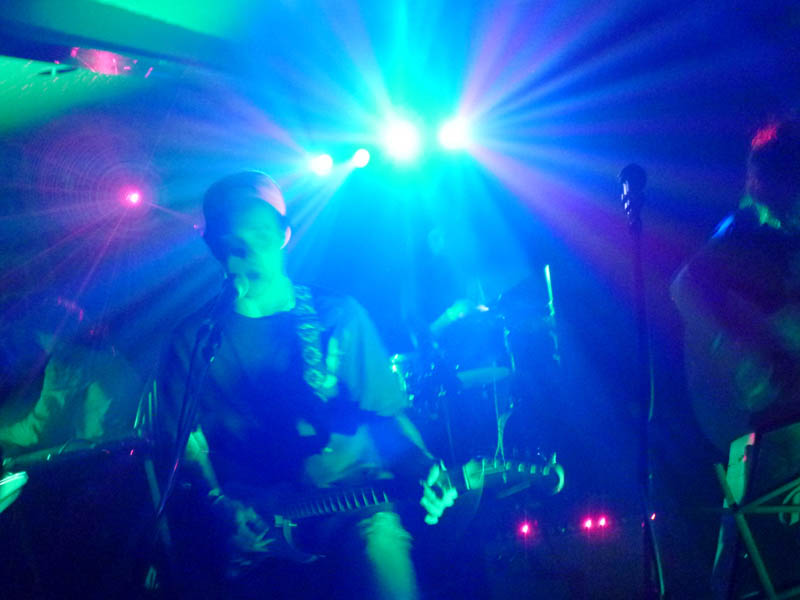

the Deems
Hydro-electro-phonic-funk. Those are the words that come to mind when I try to fit Harrisonburg's most popular jam band- the Deems, into a musical genre. The Deems, previously known to some of you as the Sour Deemsters, have become a staple in the Harrisonburg music scene and have developed a significant following, affectionately called "the Deem Team."
Download 5 of our studio tracks! Sour Deemsters - The Way Out West Sampler
